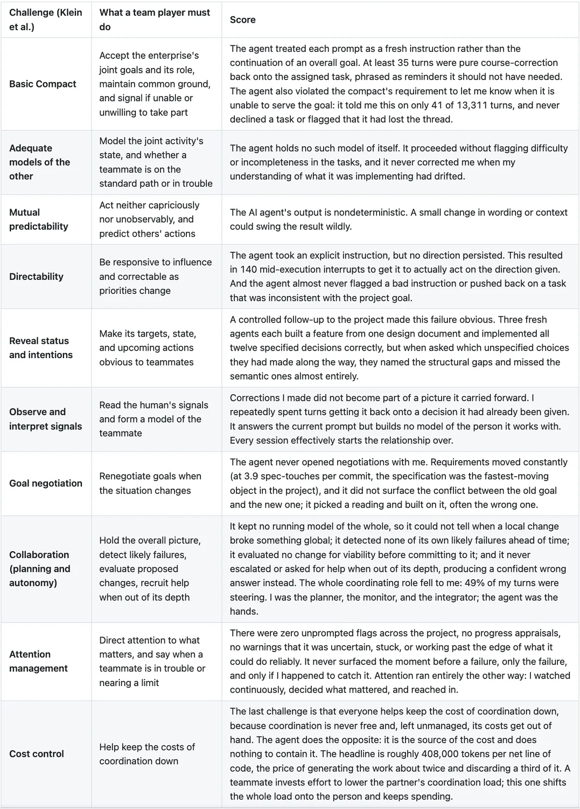

A very useful and powerful frontier agent still doesn't meet a standard defined more than twenty years ago.
The allure of agentic employees
It seems that one cannot open daily news without seeing an article about AI displacing workers and companies having not only flesh-and-blood employees, but also a large number of agentic ones. Yet, if managers were to really have these virtual employees, how should they go about evaluating them?
More than 20 years ago, this question was asked by Klein et al. as a list of challenges of using autonomous agents as a team player. Based on these challenges as a graded rubric, GenAI solutions fail as a team player. That is, even if GenAI solutions provide great value in bare speed and improved accuracy, they appear to be unfit to be part of the collaborative layer of a modern organization.
Why organizations need team players
The following example demonstrates the importance of having your employees be team players. Imagine two employees designing a new home. The layout employee is assigned to create the layout of the rooms and a plumber is designing a pipe layout. The room layout starts first by designing the width and depth of the room and where the doors will go. But that person may pick the doors on every floor going in a different direction. This creates an issue for the plumber, as now there is no wall that can carry water and waste in a straight line.
Note that an iterative approach will not work in this case, and the plumber and the layout designer may oscillate between two incompatible designs even while perfectly fluent in their own discipline. This coordination for the ultimate goal of designing a better home requires interdependence and negotiation on behalf of the team building the home. Now scale it up to the size of a modern organization, and it becomes clear why even the best individual performers can be very good but unsuited to building and maintaining complex solutions.
Quarterly evaluation of one of my agentic employees
The table below lists my quarterly evaluation of one of my Claude Opus-based agentic "employees" as the AI teammate on my human-AI team. The project we collaborated on was a success, as it provided me with a good baseline reference research workflow that relies purely on local models. But the project took much longer, took many more iterations, and cost much more time and money than I originally allocated to the effort. And as its supervisor, I can give this agent feedback, which, as we will discuss later, it has no ability to incorporate into its future work.
This was a real system built over 29 days (with 59 hands-on hours), on a single branch and as the sole author. I took it from an existing prototype to a working pre-release. The project has a very robust testing pipeline, with its 174 files covered by 2,416 tests (1,831 of them unit tests). It has a full verification harness with ruff, mypy, pytest, Hypothesis property tests, Playwright end-to-end, and security scanning.

Yet while utterly failing as a team player, my agent aces an evaluation as a tool.
Don't hire AI agents as employees; give your employees agentic tools
Treating AI agents as employees assumes that they will sit on the org chart and perform the roles it defines. But an AI agents has no concept of the work your organization needs to do, it cannot negotiate with other employees, it cannot take ownership or responsibility for its work, and it cannot mentor and develop new employees. It is simply a very powerful tool.
What comes next
The next article explores the obvious follow up question: what does organization look like with human team players collaborating through their AI agents.
References and further reading
- Klein, G., Woods, D. D., Bradshaw, J. M., Hoffman, R. R., & Feltovich, P. J. (2004). Ten Challenges for Making Automation a "Team Player" in Joint Human-Agent Activity. IEEE Intelligent Systems, 19(6), 91-95. https://doi.org/10.1109/MIS.2004.74
- Shkolnikov, Y. P. (2026). The Second Storm Doesn't Find a Pristine Forest: Why Near-Term AI Augments Labor Rather Than Replacing It. SSRN. https://papers.ssrn.com/sol3/papers.cfm?abstract_id=7195101
- Shkolnikov, Y. P. (2026). AI Will Not Displace Human Labor in the Near Term. And It Will Make the Work Better. LinkedIn. https://www.linkedin.com/pulse/ai-displace-human-labor-near-term-make-work-better-yakov-shkolnikov-oy26c/
- Shkolnikov, Y. P. (2026). Why AI Can Generate Text Yet Cannot Write. LinkedIn. https://www.linkedin.com/pulse/why-ai-can-generate-text-yet-cannot-write-yakov-shkolnikov-tdzoc/
- Shkolnikov, Y. P. (2026). The Complexity Gap: Why AI Widens the Distance Between Organizations That Understand Their Technology and Those That Only Manage It. LinkedIn. https://www.linkedin.com/pulse/complexity-gap-why-ai-widens-distance-between-those-only-shkolnikov-33d0c/
- Shkolnikov, Y. P. (2026). Agentic Loops: The Gambler's Fallacy at Cloud Scale. LinkedIn. https://www.linkedin.com/pulse/agentic-loops-gamblers-fallacy-cloud-scale-yakov-shkolnikov-c5w1e/